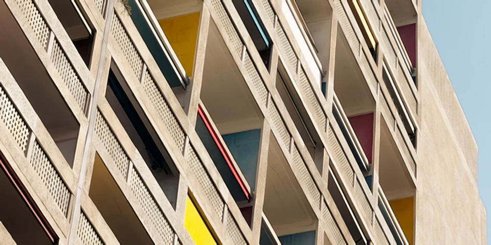

Study 01 / Image & model credits
A closer look
at the example.
The comparison on this site is a real run of LocalSR. Here is where the photograph came from, how the input was made, and what you are looking at.
The photograph
Unité d’Habitation, Marseille, France, photographed by Tim Ziegelbaum. The image is used under the Unsplash License. The photographer is credited for the source image; no endorsement of LocalSR is implied.

From input to output
- Start with the 2268 × 4032 source photograph. Select a landscape crop from pixel coordinates (0, 1900) to (2268, 3034).
- Resize that crop to 480 × 240 pixels with Lanczos resampling. Save as PNG. No additional blur, noise, or compression artifacts are added.
- Run the input through LocalSR's actual Quick Start / SPAN 4x NomosUni processing pipeline. Use 4× output, FP32 precision, a tile size of 256, and a 16-pixel halo.
- Save the resulting 1920 × 960 image as lossless WebP for the comparison. No further sharpening or color changes are applied.
The “closer look” view uses matching crops from the same input and output: 160 × 80 input pixels and 640 × 320 output pixels. Both sides fill the same display area. The separate decorative work print is resized and compressed for a lighter page.
{kind=link}
{kind=link}
The model
4xNomosUni SPAN multijpg by Philip Hofmann, distributed under CC BY 4.0. LocalSR checks the downloaded model against its pinned size and SHA-256 digest before use.
The public processing record includes the model checksum and the application source revision used to make this example. The website repository also contains a reproduction script.
Reading the result
This is one deliberately prepared example, not a speed benchmark or a claim about every photograph. The high-resolution source is used to make the small input; it is not substituted for the processed result.
Super-resolution predicts plausible structure. Railings, small text, faces, and textures can change in ways you may or may not want. Compare the result closely and keep the original.
Back to the light table